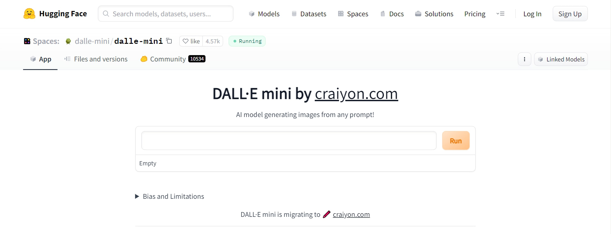
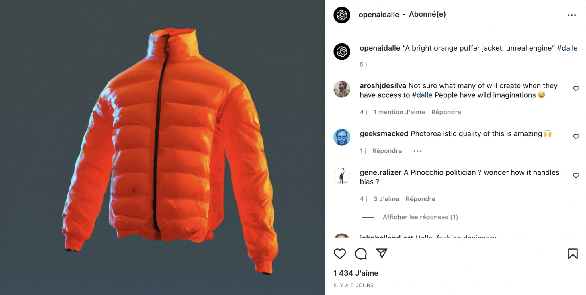
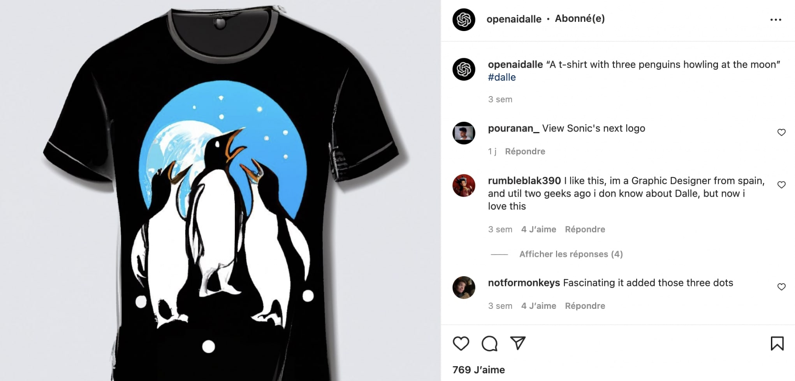

DALL-E : Generating Images from Text
DALL·E is an advanced deep learning model developed by OpenAI that can generate images directly from text prompts. The first version was introduced in 2021, and only a short time later, DALL·E 2 was unveiled — producing even more realistic, detailed, and creative results. For many, this technology feels magical; for others, it raises profound ethical questions about creativity, ownership, and truth in the digital age.
In this article, we’ll break down how DALL·E works, walk through some striking examples, explore potential applications, and reflect on the limitations and ethical debates surrounding this remarkable AI system.
- Presentation of the DALL·E Model Through Examples -
DALL·E is a variant of GPT-3, containing around 12 billion parameters. Unlike GPT-3, which is trained purely on text, DALL·E learns from paired image + text examples. Its training dataset included more than 250 million image–caption pairs, giving it the ability to “imagine” pictures from written descriptions.
For example, when prompted with something whimsical like “an armchair in the shape of an avocado,” the model combines concepts in novel ways, blending shapes and textures in a way that feels almost human. This ability to creatively fuse unrelated ideas is what makes DALL·E stand out compared to standard computer vision systems that only classify images.
Below are some iconic results from DALL·E v1:


You can find more examples from DALL·E v2 on its official Instagram account, which showcases how far the model has come in realism and detail.
- How to Test DALL·E? -
Access to DALL·E 2 is limited. OpenAI currently provides 50 free image generations per account, after which users must purchase credits. The reason for this restriction is partly technical (computational cost) and partly ethical (to limit misuse).
For those curious without access, the community has built alternatives such as DALL·E Mini (also known as Craiyon), hosted on HuggingFace. While the output is less polished than DALL·E 2, it still provides a taste of how AI can translate text into images.
- What Are the Main Applications of This Technology? -
The possible applications of DALL·E are vast, ranging from art to commerce to science. Let’s look at a few:
+ Generating Images for Articles
Bloggers and writers often struggle with finding copyright-free visuals. DALL·E can generate original images tailored exactly to an article’s theme — saving time and avoiding licensing issues. However, this raises questions about whether such generated works can truly be considered “copyright-free,” since they are derived from massive datasets of existing works.
+ Finding Ideas for Fashion and Design
DALL·E shines at mixing concepts creatively. A famous example is the “avocado chair.” Designers can use such outputs as inspiration for new products. Instead of spending weeks sketching, they can instantly visualize dozens of ideas. Below are examples of AI-inspired clothing concepts:
 + E-Commerce and Marketing
For online shops, DALL·E 2’s ability to modify images quickly is revolutionary. A clothing retailer could generate a model wearing different outfits instantly, or swap backgrounds to fit seasonal campaigns. This could dramatically reduce costs in product photography and marketing, though it also poses risks to traditional creative professions.
+ Testing NLP Model Understanding
Interestingly, DALL·E can serve as a tool to evaluate language comprehension in other models. By generating images from textual prompts, we can test whether a model truly understands semantics. In fields like medical translation, this could be invaluable — helping ensure that AI systems interpret critical information correctly.
- DALL·E Limitations and Ethics -
While DALL·E is astonishing, it is far from perfect. Its power raises serious ethical challenges:
- Fake news & misinformation: AI-generated images can be used to fabricate convincing but false events, making misinformation harder to detect.
- Job disruption: Photographers, illustrators, and stock image providers may find their work devalued as companies shift to AI-generated visuals.
- Content moderation: OpenAI limits prompts related to politics, religion, and explicit content to prevent harmful use.
- Environmental cost: Training massive models consumes enormous computing power, raising concerns about sustainability.
- Concentration of power: Only a handful of organizations (like OpenAI or Google) can afford to train such large models, giving them disproportionate influence over the future of creativity.
Because of these risks, OpenAI carefully moderates usage and restricts who can access the tool. The company continues to refine filters and safety systems to prevent abuse.
Ultimately, DALL·E represents both an incredible opportunity and a profound challenge. On one hand, it expands human creativity by making visual imagination more accessible than ever. On the other, it forces us to reconsider concepts of originality, authorship, and trust in a world where images may no longer serve as proof of reality.